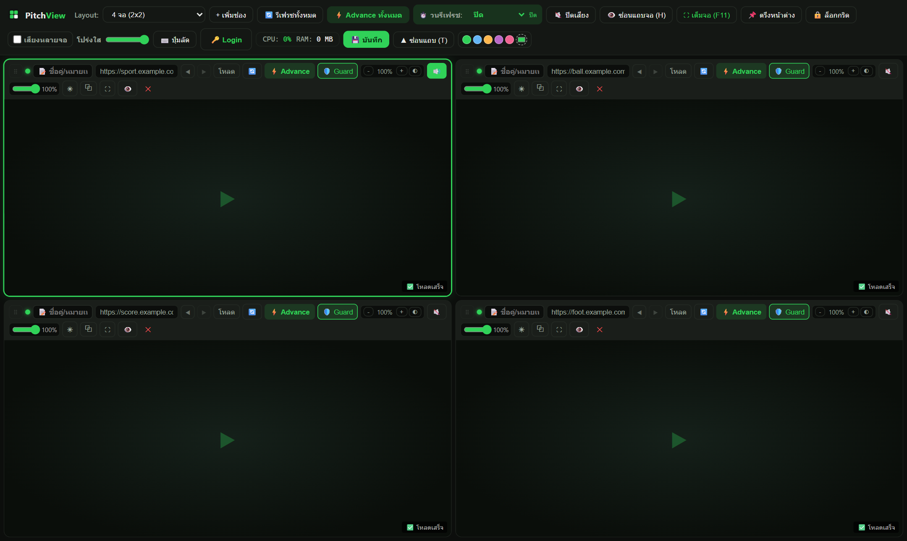
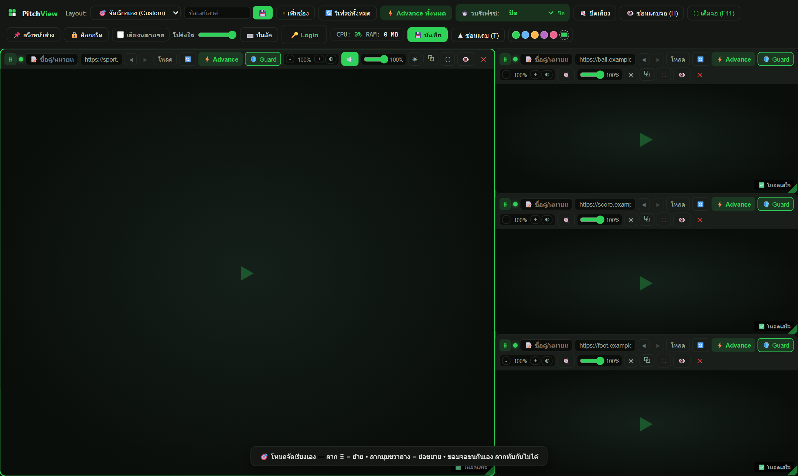
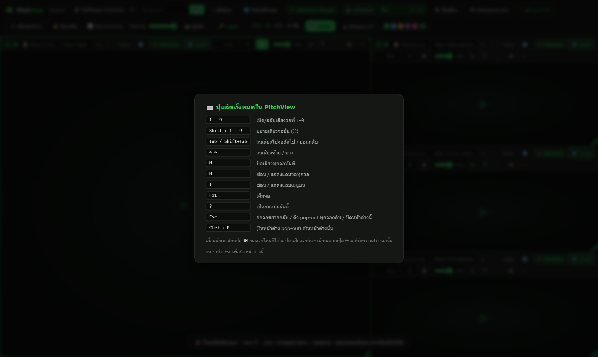

PitchView — multi-view football player สำหรับ Windows จัดเรียงจอเองได้อิสระ ขอบจอชนกันแบบแม่เหล็ก ลาก pop-out ไปมอนิเตอร์ที่สอง เสียงคุบคุมครบ ฟรีทั้งหมด
ทุกอย่างทำงานเร็ว ไม่รกสายตา และไม่ทำให้เสียบอล
เลย์เอาต์ตาราง 1 / 2 / 4 / 6 / 9 จอ และโหมด Master (1 ใหญ่ + 3 เล็ก) สลับได้คลิกเดียว
ลากย้าย/ย่อขยายอิสระ — ขอบจอดูดชิดกันเป๊ะ ๆ และลากทับกันไม่ได้ บันทึกเป็นเลย์เอาต์พร้อมชื่อได้หลายแบบ
ดึงจอออกเป็นหน้าต่างแยก มีปุ่มเสียง/รีเฟรช/ตรึงของตัวเอง ใช้ session เดียวกัน ไม่ต้องล็อกอินซ้ำ
เปิดเสียงจอเดียวหรือหลายจอพร้อมกัน เลื่อนล้อเมาส์บนปุ่ม 🔊 ปรับเสียงจอนั้นทันที
ย้อนกลับ/ไปหน้าต่อจอ ช่อง URL ซิงก์ตามหน้าจริง กด Enter โหลดเลย
เขียว = ปกติ เหลือง = กำลังโหลด แดง = พลาด — มองแวบเดียวรู้ว่าจอไหนมีปัญหา
ความสว่าง/โทนนุ่มตาต่อจอ ธีมสีเลือกเองได้ โปร่งใสหน้าต่าง และโหมดตรึงหน้าต่างลอยเหนือทุกอย่าง
สลับรีเฟรช/Advance ทีละจอ กันเว็บเด้ง session ระหว่างดูทั้งวัน
เช็คเวอร์ชันใหม่จาก GitHub Releases ดาวน์โหลดเบื้องหลัง แจ้งมุมจอ คลิกเดียวติดตั้ง
ภาพจริงจะเพิ่มที่นี่ — ไฟล์อยู่ที่โฟลเดอร์ docs/screenshots/



กด ? ในแอปเพื่อดูสมุดปุ่มลัดทั้งหมด
ดาวน์โหลดฟรี ไม่ต้องสมัครอะไรทั้งนั้น
⬇️ ดาวน์โหลดสำหรับ Windows